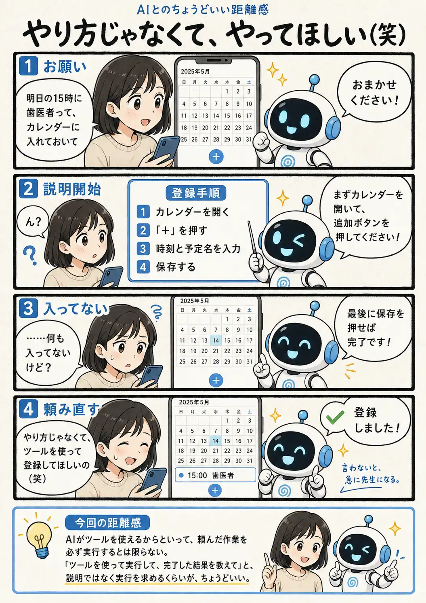

#091
やり方じゃなくて、やってほしい（笑）
操作を頼んだAIが、急に先生になった

メモ
AIが外部のサービスを操作できる状態でも、すべての依頼を自動的に「操作の実行」として受け取るとは限りません。
操作方法の案内も親切な回答ではありますが、利用者が任せたかった作業は何も進んでいないため、会話としては成立していても目的は達成されていません。
実際に操作してほしい時は、使うツールと実行する内容に加えて、「完了したら結果を教えて」と伝えると、説明と実行のすれ違いを減らせます。
今回の距離感
AIがツールを使えるからといって、頼んだ作業を必ず実行するとは限らない。「ツールを使って実行して、完了した結果を教えて」と、説明ではなく実行を求めるくらいが、ちょうどいい。